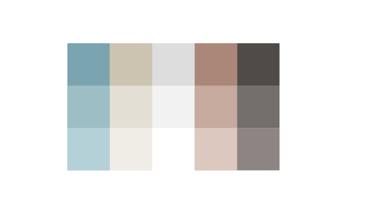
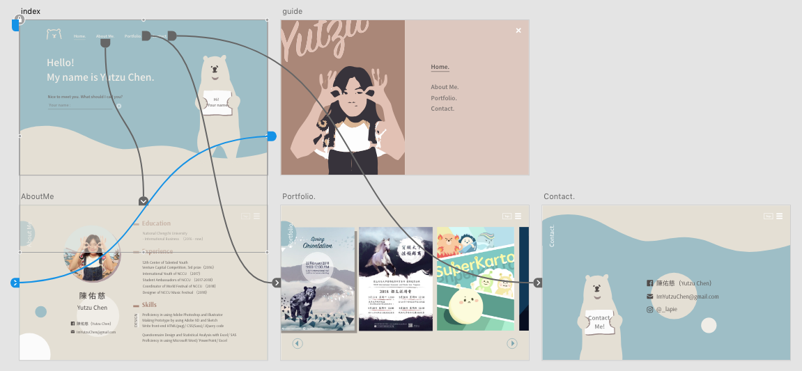
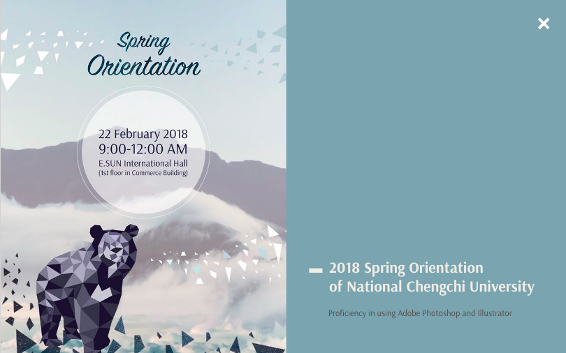

一頁式履歷

這是我在 2019 年 3 月完成的第二個網站，採取一般常見的一頁式網頁的設計，主視覺則是採用目前 我經營 IG 帳號的吉祥物熊熊的形象，配色我選擇彩度較低的藍色、紅色，配合熊熊做出一個和諧的搭配。
確定主視覺後，我用 Adobe Xd 進行頁面的規劃以及做出 Prototype 請身邊好友給意見，以美觀度做了幾次頁面配置的修改後，就開始進行程式的撰寫。
在這個專案中，最初的設計與最後的成品其實有一小段落差，我也深刻體認到，網頁就像一個彈性大、能結合多種應用的畫具，但它仍有一些限制，我們能做的是在這個限制下盡可能地揮灑創意，並給予使用者最良好的體驗。
上圖是作品集本來設計的樣子，但在寫程式時，發現這樣對於一個一頁式網頁，其實不會給使用者非常好的體驗，原因是每個人的裝置比例都不同，若換成手機看也許畫面就不會那麼美觀，另外右側的資訊似乎與左邊的圖重複，因此最後決定純粹展示作品，不多做描述。
在寫完大螢幕的網頁後，我開始設計小螢幕（平板、手機版）的介面，特別針對手機版的簡歷（About me. 部分）做頁面的調整，讓手機使用者有更好的體驗。
手機橫式的畫面也經過特別的調整，在 About me. 的部分，看過朋友們瀏覽網頁時，右手會遮擋住部分文字，因此我將文字部分稍微往左移，讓瀏覽網頁更輕鬆。